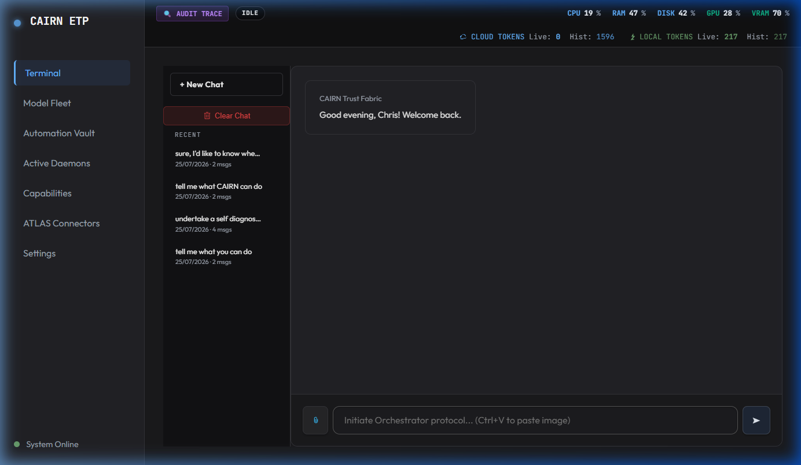
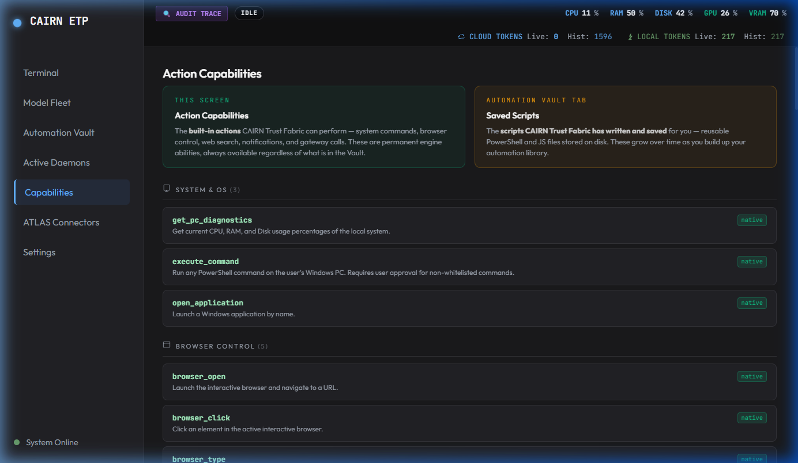
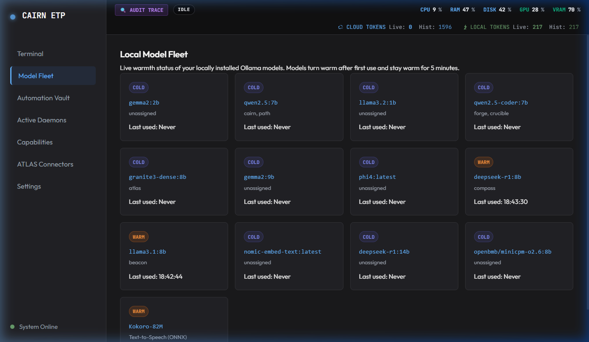
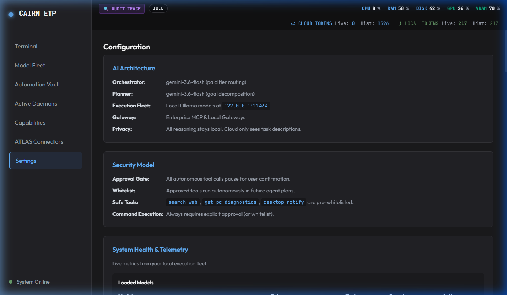
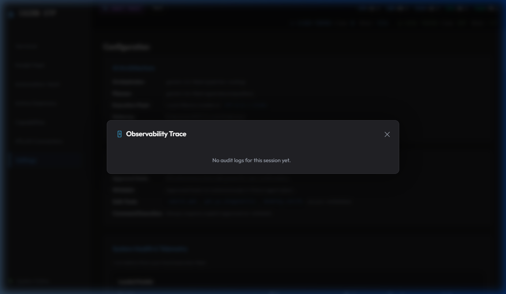
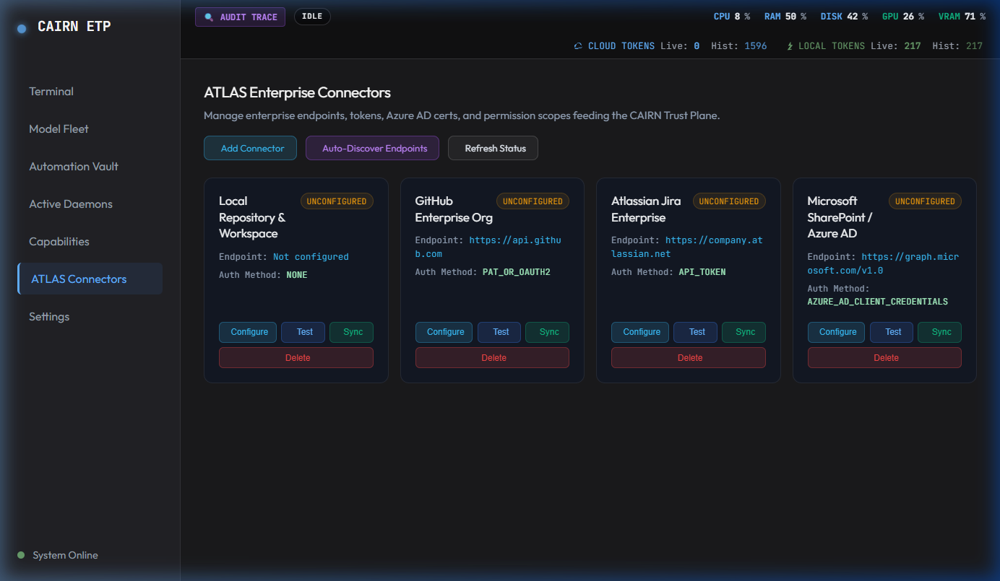
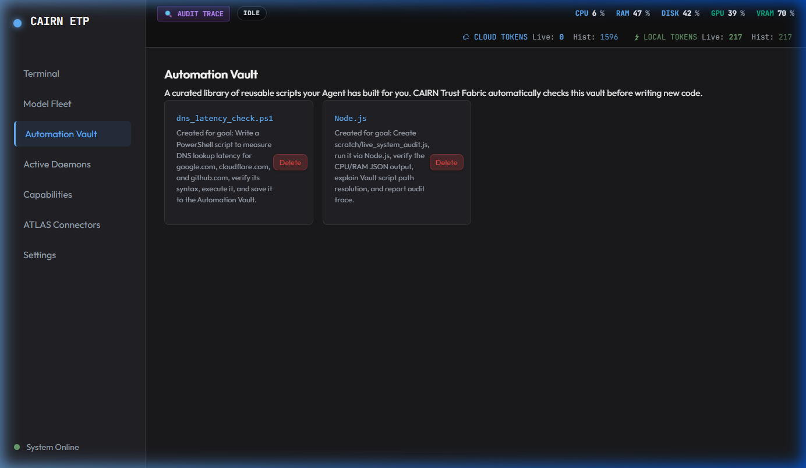
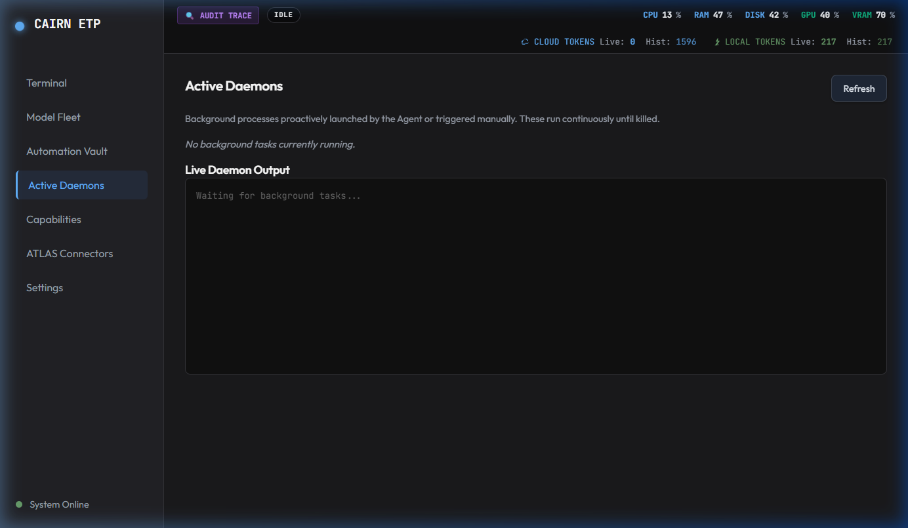

CAIRN structures system capabilities into 7 formal Enterprise Pillars. Below are direct captures from the running CAIRN Trust Fabric local orchestration engine, sovereign desktop client, and enterprise control plane.
Core evaluation and operational interfaces across CAIRN's 7 enterprise governance pillars.
CAIRN operates as an unyielding default-deny security boundary. Every incoming prompt instruction and proposed tool call is intercepted and evaluated against strict cryptographic policies prior to execution.
By separating cloud reasoning models from direct OS tool access, CAIRN eliminates prompt injection vectors and ensures rogue instructions cannot touch internal systems without authorization.
Emits signed contract evaluation events for complete risk management transparency.


PATH is the intent classification and task orchestration layer. It inspects user prompts alongside institutional context to decompose complex goals into multi-step execution plans.
Maintains model-agnostic routing, dynamically selecting local Ollama workers or cloud backbones based on hardware availability and security clearance.
Prevents model vendor lock-in while maintaining total operational continuity during external cloud outages.

BEACON maintains real-time operational awareness across active agent daemons, streaming live WebSocket progress telemetry directly to enterprise dashboards.
Synthesizes intermediate execution updates without exposing sensitive payload data, ensuring enterprise risk teams maintain total visibility over background tasks.
Acts as the central event bus connecting local hardware workers with enterprise monitoring infrastructure.

COMPASS records cryptographically signed evidence logs for every session trace, tool call, and model response generated across the organisation.
Provides audit provenance detailing exactly which institutional knowledge notes were referenced, which models executed the plan, and whether code execution was container-verified.
Delivers compliance reporting ready for Chief Risk Officers and regulatory inspectors.

ATLAS synthesizes unstructured enterprise data into a 4-layer memory fabric combining Episodic SQLite Event Ledgers, Knowledge Notes, Entity-Relationship Graphs, and Semantic Vector FTS.
Delivers zero-hallucination context hydration, verifying document freshness and provenance before feeding knowledge into model reasoning windows.
Indexes saved automation scripts to prevent re-inventing institutional workflows.

FORGE synthesizes candidate scripts and automation workflows using specialized local code models. It triggers a 3-stage verification pipeline (syntax compilation check, pattern pre-filtering, and container containment).
Manages cryptographic secret protection, API credential handles, and script integrity allow-lists within the local automation vault.

CRUCIBLE represents the Execution & Sandbox Containment boundary. It pairs directly with FORGE: FORGE shapes candidate code; CRUCIBLE proves code under strict container isolation (Docker) before execution is trusted.
Enforces zero-network containment (--network none), strict resource limits (--memory=128m), and read-only container filesystems.
If runtime errors occur inside the container, CRUCIBLE feeds exact stack tracebacks back to FORGE for automated defect-repair loops.
